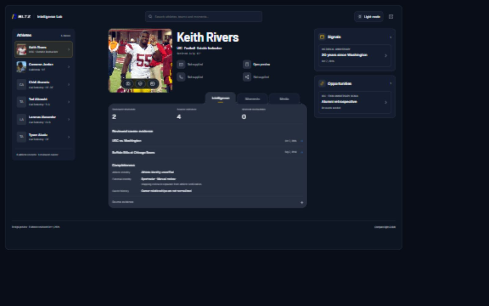

Selected direction · Athlete B + Moment B
One athlete. A clearer view of their career.
The roster workspace now has BLTZ colors, light and dark themes, sourced portraits, quieter motion and concise evidence files. Mobile starts with the athlete; search lives in the top bar.